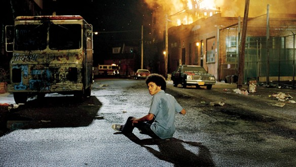
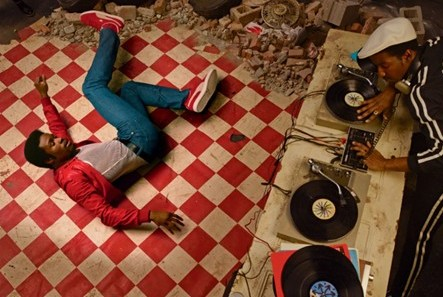
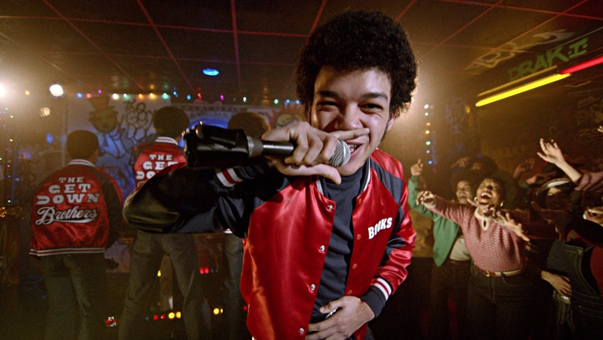
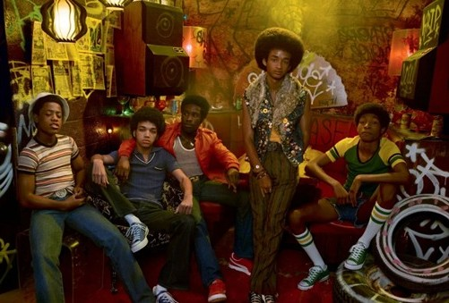

Así anuncia el primer episodio de la serie dirigida por Baz Luhrmann, estrenada por Netflix en 2016. La frase, atribuida al poeta sufí Rumi, aparece graffiteada en un tren oxidado e inaugura un conjunto de expresiones poéticas-espirituales que recorren la serie con una búsqueda narrativa clara: contar la historia sobre cómo, en medio del abandono urbano de algunos barrios del Nueva York de los años setenta, emergieron nuevas formas de arte, comunidades y resistencias sociales y culturales.
¿Puedo llegar a historizar demasiado una serie televisiva que bien podría considerarse un tiernísimo coming-of-age musical cargado de luces, hip-hop, personajes sobrediseñados y clichés narrativos? Sí, y me parecería un problema no hacerlo. Sencillamente porque veo fascinante la forma en que Baz Luhrmann mantiene en The Get Down una mirada aguda sobre la crisis social y urbana que vivía la ciudad, y cómo, de alguna forma, los personajes y el desarrollo de la historia están profundamente atravesados por eso.

Vemos una ciudad dividida entre el brillo y la decadencia: Manhattan, como una bola de boliche, resplandece con las finanzas y la música disco, mientras el Bronx arde entre edificios incendiados y viviendas destruidas, trenes cubiertos de graffiti y calles atravesadas por una segregación planificada. Luhrmann no es nada sobrio respecto a la época que retrata. Hay una experiencia sensorial exagerada: saturación y sobrecarga de colores, movimientos de cámara veloces, y mucha fragmentación visual. Lo que brilla, encandila, y lo que arde, revela.
El Nueva York de fines de los 70 aparece en The Get Down como una ciudad partida. Mientras Manhattan se consolidaba como centro financiero y cultural global, barrios como el Bronx sufrían una profunda crisis debido al desempleo, la pobreza, la desinversión pública, la crisis fiscal de la ciudad y el deterioro habitacional. La construcción de grandes autopistas urbanas, el éxodo de las clases medias hacia los suburbios y la pérdida masiva de empleos industriales transformaron amplias zonas de la ciudad en escenarios de ruina cotidiana.
Entre escombros y basura, un grupo de amigos adolescentes compuesto por Zeke, Dizzee, Ra-Ra y Boo-Boo intenta hacerse escuchar y encontrar su lugar en ese barrio destruido. Algunos años mayor que ellos, Shaolin Fantastic, sobrevive vendiendo drogas en un entorno hostil mientras aprende a convertirse en DJ. Mientras Zeke domina las rimas y Dizzee el graffiti, todos juntos se convertirán en los Get Down Brothers, encontrando en el graffiti, la poesía, la música y el hip hop una forma de apropiarse de las ruinas y convertirlas en creación colectiva. Mientras tanto, la otra protagonista, Mylene Cruz (Herizen F. Guardiola) –algo así como la novia de Zeke– es hija de puertorriqueños y sueña con convertirse en cantante disco y escapar del destino conservador y religioso que su familia imagina para ella.
Francisco “Papá Fuerte” Cruz y Mylene Cruz
Su tío, Francisco “Papá Fuerte” Cruz (Jimmy Smits), es un influyente político y líder barrial puertorriqueño que quiere llevar adelante un nuevo proyecto de viviendas en el Bronx. Para ello, Papá Fuerte, considerado “el chulo de los pobres”, negociará políticamente con el polémico y conservador candidato a alcalde Ed Koch, quien odia el graffiti y cree que los jóvenes son un problema para la ciudad. Mylene sueña con salir del Bronx y Zeke siente la presión de hacerlo, pero en ese camino se verán cada vez más envueltos en el entramado político de Papa Fuerte y otros personajes con mucho poder (y recursos). Ambos, deberán enfrentarse a decisiones difíciles sobre quiénes quieren ser, con quiénes están dispuestos a negociar y qué partes de sí mismos son capaces de sacrificar para imaginar un futuro distinto.
Uno por uno, hacia la oscuridad
Nuestro protagonista, Ezekiel Figuero (Zeke), interpretado por el —creo yo— infravalorado y brillante Justice Smith (vean I Saw the TV Glow de Jane Schoenbrun, otro coming-of-age aunque esta vez en forma de thriller), es un adolescente afro-puertorriqueño con una historia triste y un talento extraordinario para las palabras. Zeke mira al cielo y les pregunta a sus amigos si acaso el sol está cada vez más cerca de las calles del Bronx. Es el verano de 1977 en Nueva York y no solo las temperaturas baten récords históricos: el Bronx arde. Decenas de edificios son incendiados día tras día.

Alquilar propiedades en el Bronx era cada vez menos rentable para muchos propietarios, y lo que hacían era prender fuego sus propios edificios para cobrar los seguros: resultaba más lucrativo incendiarlos que mantenerlos alquilados. La gran mayoría de esas viviendas estaban habitadas por comunidades afroamericanas y latinas. El barrio prendido fuego no se siente como una catástrofe excepcional, sino que es parte del universo estético de la serie. Hay un paisaje urbano y cinematográfico cotidiano: humo permanente, sirenas, edificios vacíos y abandonados, objetos quemados, escombros y familias desplazadas atraviesan constantemente la vida de los personajes. Los incendios intencionados por los propietarios funcionan como una forma de vaciamiento urbano en una ciudad donde el Estado abandona las zonas más pobres y racializadas.
El ritmo dice: este es el camino
La trama se tensiona más cuando, en uno de esos incendios, Shaolin Fantastic pierde parte de los discos con los que practicaba DJing junto a los Get Down Brothers. El contexto era complicado como para que unos adolescentes marginados pudieran comprar discos, bandejas o equipos de sonido. Por eso, recién reunidos y sin recursos para organizar fiestas o pinchar vinilos en vivo, empiezan a rebuscárselas para ahorrar dinero y comprar sus primeros equipos. Organizan una fiesta clandestina en la peluquería de los padres de Ra-Ra, usando equipos prestados y fingiendo mezclar discos, aunque todavía no saben hacerlo.

La música suena; muchos jóvenes del barrio bailan desenfrenados y, por unas horas, la fiesta logra suspender la sensación constante de agobio y crisis que atraviesa el Bronx. Hay algo muy parecido que ocurre en Moulin Rouge! (2001) y en El Gran Gatsby (2013), películas famosas del director. La fiesta, el exceso visual, la música y el espectáculo funcionan casi como momentos de suspensión emocional frente a mundos violentos o trágicos. Me parece particularmente bello que Baz Luhrmann proponga que la intensidad estética y el arte (en especial la música presenciada en vivo) pueden generar experiencias de comunión o trascendencia, aunque sean momentáneas.
Creo que es el pulso vital de la narración de The Get Down: la fiesta como refugio colectivo, como experiencia estética y espiritual capaz de transformar momentáneamente la devastación cotidiana en comunidad, deseo y celebración. En contraste con el contexto del abandono urbano, del racismo y de la violencia tanto estatal como capilar, el beat y el baile funcionan casi como una forma de trance compartido capaz de suspender, aunque sea por unas horas, esas fracturas cotidianas.
No es casual que la serie recurra constantemente a referencias poéticas del místico sufí Rumi, muchas de ellas presentes en los títulos de los capítulos, que aparecen visualmente representados como enormes graffitis sobre los vagones deteriorados del tren neoyorquino. La elección estética resulta significativa: incluso en medio de la decadencia urbana y la precariedad material, el arte irrumpe inscripto sobre la propia infraestructura en ruinas de la ciudad. Desafortunadamente, el trance de esa fiesta dura poco. Todo se complica cuando una pandilla enviada por Cadillac —el millonario dueño de Les Inferno, un boliche disco— irrumpe violentamente en el lugar, roba el dinero recaudado y destruye los equipos.
La oscuridad es tu vela
Con su estilo hiperestilizado, Baz Luhrmann construye un potente archivo audiovisual histórico para situar a los personajes en el famoso apagón del 13 de julio de 1977. En plena ola de calor, la ciudad permaneció más de veinticuatro horas sin electricidad y el escenario urbano se vio atravesado por incendios, saqueos, arrestos y múltiples episodios de violencia. Los saqueos afectaron todo tipo de comercios, pero para la historia del hip hop adquiere especial relevancia lo ocurrido en muchas tiendas de electrónica: según DJs reconocidos de la época y distintas fuentes periodísticas, fue entonces cuando numerosos jóvenes accedieron por primera vez a bandejas, parlantes y equipos de sonido que luego utilizarían para organizar fiestas callejeras y comenzar sus trayectorias artísticas dentro del break y el DJing. “Así me hice con mis primeros platos”, relata el DJ Clark Kent en The Come Up. Historia oral del hip-hop, de Jonathan Abrams.
Grandmaster Flash (izquierda) enseñándole a Shaolin Fantastic a marcar el break.

Después del apagón, el Bronx se llenó de mercados callejeros ilegales donde circulaban artículos de todo tipo robados durante los saqueos. La ilegalidad y la reventa comenzaron a convertirse en una parte importante de la economía cotidiana del barrio. Como explica Jeff Cheng en su libro Can’t Stop Won’t Stop (2005), el Estado se retira, pero la vida social no desaparece, sino que se reorganiza en formas informales, precarias y creativas de supervivencia colectiva. La serie muestra cómo después del apagón, la ciudad comienza a llenarse de panfletos que anuncian fiestas y nuevos grupos de DJs. Se intensifica rápidamente la competencia dentro de la escena emergente y los Get Down Brothers descubren que no alcanza con tener talento o entusiasmo: otros grupos poseen mejores equipos, contactos más sólidos y vínculos con pandillas poderosas capaces de garantizar protección, financiamiento y control territorial de las fiestas. La música aparece atravesada por disputas de prestigio, supervivencia y poder urbano.
El hip hop, el graffiti, el breakdance y el DJing aparecen no sólo como expresiones artísticas, sino también como formas de apropiación simbólica y material de una ciudad atravesada por el abandono y la desigualdad. Esa relación entre creatividad y precariedad vuelve a aparecer en la propia trama de la serie. Después del fracaso de la fiesta, los chicos quedaron nuevamente sin dinero y sin equipos. Más adelante, tras descubrir que Cadillac los había utilizado para deshacerse de un cadáver, los Get Down Brothers deciden robarle discos y equipos a Les Inferno como gesto de revancha y como una forma de supervivencia cultural. La serie presenta ese momento como una mezcla entre acto desesperado y nacimiento político del grupo: para poder hacer música, pinchar discos y existir dentro de la escena musical del barrio, los personajes deben moverse entre la precariedad, la ilegalidad y la misma violencia que los rodea.
Hay un dispositivo narrativo que quizás resulte el más inquietante de toda la serie: los Savage Warlords, una pandilla juvenil que aparece entre los escombros de los edificios destruidos, buscando objetos que puedan servirles y marcando el territorio mediante amenazas y violencia. Dentro de la pandilla aparecen Napoleon, que tendrá alrededor de 12 años, y otro niño, que llega a los 10 y nunca se sabe el nombre. Baz Luhrmann los presenta como figuras casi espectrales: surgen de repente, desaparecen rápido y suelen estar encargados de tareas extremas, como prender fuego edificios vacíos, con una mezcla perturbadora de juego, obediencia y supervivencia. El guion evita explicar demasiado quién los controla o por qué hacen exactamente lo que hacen; justamente ahí aparece parte de su fuerza simbólica. Más que personajes completamente desarrollados, parecen sombras fugaces de una ciudad donde la violencia estructural llegó a un rincón tan oscuro que incluso la infancia quedó absorbida por las lógicas del abandono y la corrupción urbana.
Napoleon y el otro niño, integrantes de los Savage Warlords

Cuando el niño más pequeño es asesinado tras un arrebato de Cadillac, la serie expone con crudeza que los cuerpos más vulnerables son también los más fáciles de usar y descartar. A diferencia de otros personajes, estos niños quedan atrapados entre el fuego, la destrucción y el circuito de violencia que los rodea. Entre toda esa oscuridad, la narrativa de Baz Luhrmann vuelve a buscar la luz, mirando allí donde existe (o se crea a la fuerza) la posibilidad de construir algo distinto. Las referencias al filósofo y poeta sufí Rumi atraviesan toda la narrativa como una filosofía subterránea: en medio de la ruina todavía puede existir transformación. La música, el baile y las block parties funcionan entonces menos como evasión que como una forma precaria pero poderosa de reconstruir la comunidad y ocupar un espacio tangible y afectivo. Como enseña el sufismo, el ritmo organiza otra experiencia del tiempo, del cuerpo y en este caso de la ciudad; por unas horas, la fiesta permite imaginar que todavía es posible pertenecer a algo.
Entre edificios incendiados, saqueos y block parties improvisadas, la serie propone una idea profundamente política y emocional: entre las ruinas pueden surgir formas colectivas de resistencia, deseo y esperanza. La belleza que aparece en The Get Down no está separada de esas fracturas materiales, sino que nace desde sus márgenes y contradicciones. El arte, la música y la fiesta no resuelven las condiciones que producen la devastación del Bronx, pero sí permiten, allí donde el sistema sólo parece producir exclusión y destrucción, disputar el aislamiento, reapropiarse del espacio urbano y construir experiencias compartidas capaces de reorganizar, aunque sea momentáneamente, la vida colectiva alrededor de algo distinto a la violencia y la ruina.
Referencias y lecturas sugeridas
• Abrams, J. (2015). The Come Up: An Oral History of the Hip-Hop. Crown Archetype.
• Chang, J. (2005). Can’t stop, won’t stop: A history of the hip-hop generation. St. Martin’s Press.
• “Segregation by Design” — The Cross Bronx Expressway. https://www.segregationbydesign.com/the-bronx/the-cross-bronx-expressway